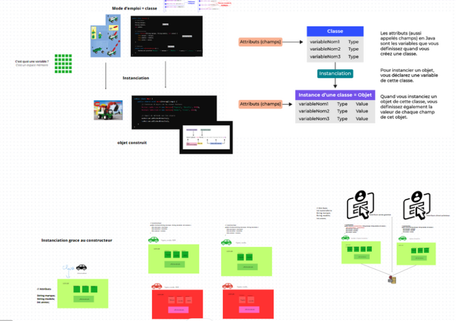
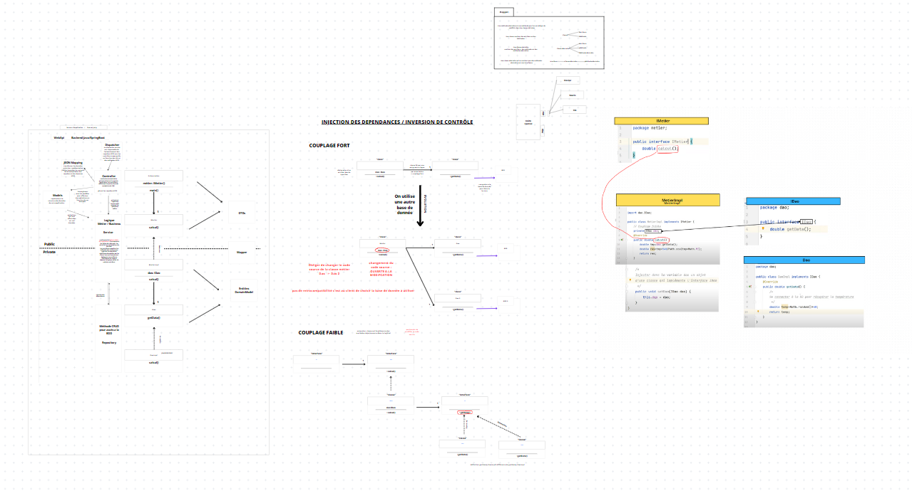

What do you want to improve

Bases de Java:
- Syntaxe de base: Variables, types de données, opérateurs, etc.
- Structures de contrôle: Boucles for, while, do-while et conditions (if, switch).
- Gestion des exceptions: try, catch, finally, throw, et throws.
Programmation orientée objet (POO):
- Classes et objets: Définition de classes, création d'objets, méthodes, et constructeurs.
- Encapsulation: Utilisation de modificateurs d'accès (private, public, protected).
- Héritage: Création de sous-classes et utilisation de l'héritage pour réutiliser du code.
- Polymorphisme: Surcharge et redéfinition de méthodes.
Collections en Java:
- Comprendre les interfaces Collection, List, Set, et Map.
- Utilisation des classes implémentant ces interfaces comme ArrayList, HashSet, et HashMap.

Introduction à Spring Boot :
- Comprendre le principe de "convention plutôt que configuration".
- Installation et configuration de l'environnement de développement.
- Création d'un projet Spring Boot simple avec Spring Initializr.
Les fondamentaux de Spring Boot :
- Compréhension du Spring Framework et de son écosystème.
- Injection de dépendances (DI) et inversion de contrôle (IoC).
- Configuration de l'application : fichiers properties et YAML.
Développement web avec Spring Boot :
- Création de contrôleurs REST avec Spring MVC.
- Gestion des requêtes HTTP, des réponses, et utilisation de ResponseEntity.
- Validation des données d'entrée.
Accès aux données :
- Introduction à Spring Data JPA pour l'intégration de bases de données.
- Configuration d'une source de données et création de repositories.
- Transactions et gestion des exceptions de la couche d'accès aux données.
here is the html Work In Progress
here is the css Work In Progress
here is the javascript Work In Progress
here is the angular Work In Progress